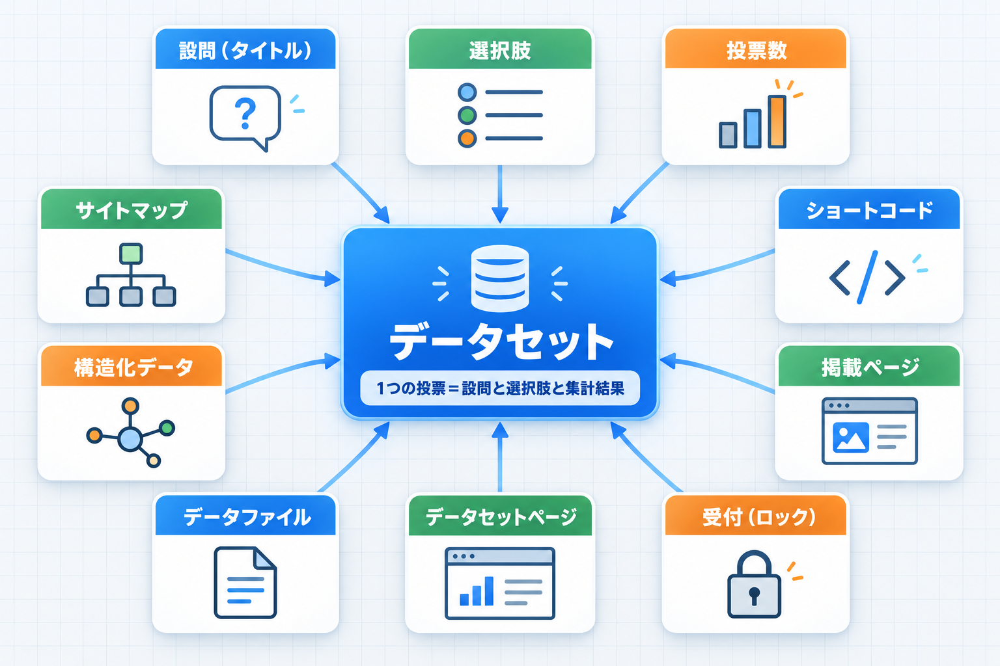

用語集
このマニュアルと画面に出てくる言葉の意味をまとめました。

図: 用語の関係
基本の用語
| 用語 | 意味 |
|---|
| データセット | 1つの投票のまとまり（設問・選択肢・集計結果）。管理画面ではこの名前で一覧・編集します |
| 設問（質問文） | 投票フォームに表示される問い。編集画面のタイトル欄に入力します |
| 選択肢 | 回答の候補。1行に1つ入力します |
| 投票形式 | 単一選択（1つだけ選べる）か複数選択（いくつでも選べる）か |
| 投票数（票数） | 選択肢ごとの票の数 |
| 総投票数 | 全選択肢の票の合計。複数選択では延べ票数 |
| 投票者数（IP） | 投票した接続元（IP アドレス）の数 |
| 割合 | 総投票数に対する、その選択肢の票の割合 |
設置と表示の用語
| 用語 | 意味 |
|---|
| ショートコード | 記事の本文に貼ると投票フォームに置き換わる短い文字列。[tk_poll id="123"] の形 |
| 投票ブロック | 記事に表示される投票のまとまり（設問・選択肢・グラフ・リンク） |
| 掲載ページ（使用記事） | ショートコードを本文に含む記事 |
| 受付／締め切り（ロック） | 投票を受け付けるか止めるかの状態。締め切り中は記事にグラフとリンクだけが表示されます |
| 集計データを拡大 | 投票前に大きなグラフを表示するボタン |
| 1人1回の制限 | 同じ接続元・同じブラウザからの2回目の投票を受け付けない仕組み |
| リセット日時 | これより前の投票を「投票済み」と数えなくなる日時。メンテナンスの「リセット日時を現在に更新」と、各データセットの「集計データを全削除する」で決まります |
| IP アドレス（接続元） | インターネット上で通信元を表す番号。同じ回線を使う人は同じになることがあります |
| Cookie | ブラウザに保存される小さな記録。投票したことを覚えておくために使います |
| ページキャッシュ | 表示を速くするため、ページを作り置きして使い回す仕組み。投票時のエラーの原因になることがあります |
公開とデータの用語
| 用語 | 意味 |
|---|
| データセットページ | /datasets/ 以下に自動で作られる、集計結果を公開するページ（一覧・詳細・形式別） |
| 詳細ページ | データセットごとのページ（/datasets/detail-番号/）。集計表と投票ブロックを表示します |
| 形式別ページ | ファイル形式ごとのページ（/datasets/csv/detail-番号/ など）。ファイルの中身を表示し、ダウンロードできます |
| データファイル | 集計結果を書き出したファイル。CSV・XML・YAML・JSON・SVG の5形式 |
| CSV | カンマ区切りの表形式。Excel などの表計算ソフトで開けます |
| JSON／XML／YAML | プログラムやシステムで読み込みやすいデータ形式 |
| SVG | 拡大しても粗くならない図の形式。円グラフの図として書き出します |
| 調査期間 | 接続元ごとに記録された最後の投票日時のうち、最も古い日から最も新しい日まで |
| 集計時点／最終更新 | 最後に投票があった日時、または投票数を手で直した日時の新しい方 |
| ライセンス | データを他の人が使うときの条件。クリエイティブ・コモンズのライセンスから選びます |
SEO の用語
| 用語 | 意味 |
|---|
| 構造化データ | ページの内容を検索エンジン向けに決まった形式で書いた情報。画面には表示されません |
| Dataset | 「データセットである」ことを表す構造化データの種類 |
| 作成者（Creator） | データを作った人・組織として構造化データに書く情報 |
| 提供者（provider） | このプラグインの作者（柏崎剛）を提供者として構造化データに書く情報。基本設定の「プラグイン作者情報」で出力を切り替えます（内容は変更できません） |
| パンくずリスト（BreadcrumbList） | ページがサイトのどの階層にあるかを示す情報 |
| Dublin Core | 文書やデータの書誌情報（題名・作成者・形式など）を書く共通の形式 |
| サイトマップ | 検索エンジンに知らせたいページの一覧のファイル。このプラグインはデータセット専用のものを作ります |
| パーマリンク | ページの URL の形式。「基本」以外にする必要があります |